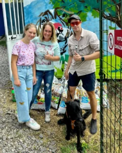
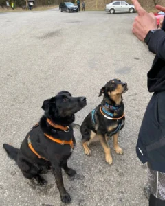
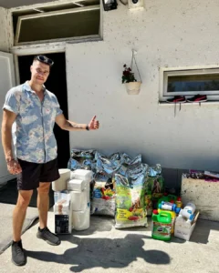
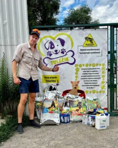
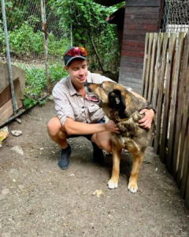
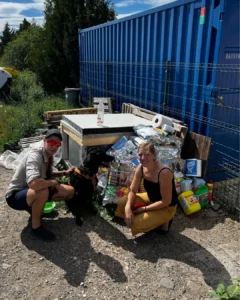
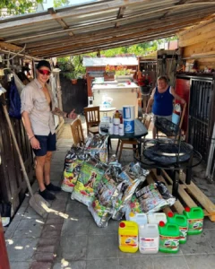

Vytvor si trvalý príkaz aspoň na 1€ a pridaj sa k našej iniciatíve!
Je tam s nami už takmer 100 úžasných ľudí.







★ Naše spoločné úspechy a záchranné misie ▼
-
✓
Projekt Mňaučín: Záchrana 4 opustených mačičiek (Berta, Bela, Bejby a Beo). Pôvodne sme ich chceli dočasne umiestniť do stodoly vo Farmalande, no kvôli nedostatku financií na stavbu sa to nepodarilo. Mačičky tak skončili u nás, v dočasnej opatere sme sa o ne starali viac ako pol roka a následne si všetky úspešne našli nové rodiny!
Viac o tomto príbehu sa dočítaš v blogu ↗ -
✓
ZACHRÁNILI SME YBYHO, MÔJHO DRUHÉHO KOCÚRIKA
-
✓
Zachránili sme kocúrika TURBA, ktorý plakal na našom sídlisku s otvorenou ranou a nikto si ho nevšímal.
-
✓
Prispeli sme na stavbu prístrešku pre koňe.
-
✓
Prispeli sme zranenej mačičke z Čadce.
-
✓
Zachránili sme 3 mačiatka a prispeli babám z OZ nechcene, ktoré zachraňujú zvieratá rôzneho typu :)
-
✓
Pomohli sme Slovenským študentom v Grécku pri záchrane SAKURY, ktorú sa im podarilo zachrániť.
-
✓
Prispeli sme na zbierky pre OZ Zverokruh, OZ mačacie šťastie, OZ očami psa, OZ mačičkovo, OZ Psy ulice OZ, UVP útulok Košice, Happy Farma, Mačičky zo Žiliny (uličníci) a iným…
-
✓
Iniciovali sme celoslovenskú kauzu týranej fenky FIFINKY, ktorú trýznil jej majiteľ, keď ju so sebou doslova ťahal po ceste SNP. Vďaka pár odvážnym ľuďom, ktorí na to upozornili sa ju podarilo zachrániť z najhoršieho. Polícia ani RVPS však proti tyranovi neurobila nič a fenka u neho zostala nadaľej. Našou spoločnou činnosťou a tlakom médií fenka zázrakom zmizla a majiteľ pár dní na to utrpel „zhodou náhod” smrteľné zranenie priamo na jeho vlastnom dvore pri rezaní dreva. Fenka je vraj v bezpečí a žije konečne spokojným životom.
-
✓
Týmto útulkom sme darovali 2 tony granúl po úspešnej ceste SNP. V spolupráci s www.slovenskegranule.sk:
1. OZ Záchranný koráb, Šaštín
2. Útulok, Skalica
3. OZ Pes a mačka v ohrození, Kremnica
4. OZ Karanténna stanica, Zvolen
5. OZ Túlavá labka, Banská Štiavnica
6. OZ Zvieratá v núdzi, Nemecká
7. Útulok Tuláčik, Brezno
8. OZ Dočasný domov pre havinkov, Piešťany
9. OZ Topoľčianske packy, Topoľčany
10. OZ Dog Azyl, Veľký Meder
11. OZ Druhá šanca, Bardejov
12. OZ Prešovskí havkáči, Prešov
13. Útulok, Kežmarok
14. OZ Na konci sveta, Košice -
✓
Pri adopcii Hektorovho brata – Huňa z útulku, ocitol sa tam po tom čo mu zomrel jeho pán. Našim masívnym zdieľaním na facebooku sa k nemu dostali skvelí ľudia Michael a Veronika, s ktorými sme dodnes kamoši 🙂
-
✓
… a mnoho ďaľším, nakoniec všetko máme na transparentom účte. ĎAKUJEM VÁM.
Webinár o výžive psov ZDARMA

V roku 2024 som bol svedkom viacerých excesov v mojom okolí, ale aj v online priestore čo sa týka STRAVOVANIA psov. Uvedomil som si, že 95% majiteľov kŕmi svojich psov nesprávne, čo vedie k zdravotným problémom, ochoreniam či alergiám.
Práve toto ma donútilo vytvoriť tento bezplatný webinár, ktorý vecne a jasne pomenúva problém a poskytuje riešenie. Informácie vo webinári majú moc predĺžiť život tvojmu psovi iba zmenou stravy!